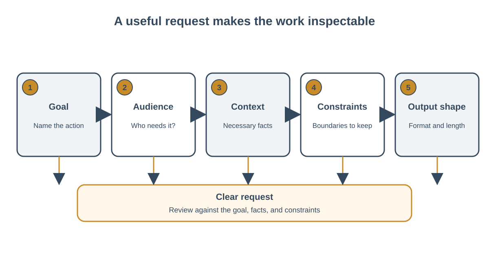

← Week 2: Define the Task and Provide Context
The Five-Part Task Brief
Learning objectives: Turn a workplace need into a clear request with goal, audience, context, constraints, and a useful output format; then improve the request through iteration.; Convert a vague workplace request into a clear task brief.; Specify an output format that makes review and next steps practical.
Content
The five-part task brief: make a request useful
Objectives: convert-vague-request, specify-output-format Estimated reading time: 7 minutes

Figure: A compact task brief makes the request and its review criteria visible.
From “make this better” to clear work
A conversational AI system responds to the instruction and context it receives. When the request is vague, the response must fill in missing details. It may guess the audience, tone, purpose, or format—and its guesses may be wrong. A useful request therefore starts with a description of the work rather than a secret phrase or complicated formula.
Imagine a coworker asks, “Can you make this better?” You need to know what “this” is, who will use it, and what improvement means. Perhaps the material is a fictional visitor notice and “better” means shorter and easier to scan. Perhaps it means warmer, more direct, more accurate, or accessible to someone reading on a phone. The requester knows these things; the AI service does not unless they are supplied.
A task brief is a short way to specify what you need. For everyday AI use, five parts are often enough: goal, audience, context, constraints, and output shape. You can use all five, but not every task needs a long prompt. Include details that could change what a useful answer looks like.
1. Goal: name the action
The goal tells the system what to do. Begin with a concrete verb such as draft, summarize, compare, organize, or rewrite. “Draft a 60-word reminder” is clearer than “help with the event.” “Summarize the fictional notes in three bullets” is clearer than “tell me about these notes.”
A good goal describes the requested operation without handing over a decision the system should not make. For example, “List factors a person should verify in the fictional scheduling plan” is different from “decide which worker deserves the preferred shift.” The first asks for organization; the second delegates a decision about people. Naming the work helps reveal whether the use is appropriate.
2. Audience: identify who needs the result
Audience information shapes vocabulary, detail, tone, and format. A reminder for first-time visitors may need to say where to enter. A staff note may assume familiarity with a room name and emphasize an action. A public notice may need shorter sentences and a clear way to get more information.
Describe audience needs directly rather than relying on stereotypes. “Readers are new to the building; explain the west entrance in plain language” is more useful and respectful than assuming what a broad group knows or prefers. If you do not know what readers need, ask a person or state the uncertainty rather than inventing traits.
3. Context: provide the necessary background
Context is the source material and relevant facts the task depends on. For a fictional event reminder, context might be: “The open house is free, begins Thursday at 6 p.m., and visitors may tour the art rooms through the west entrance.” Context should be accurate enough for the task and appropriate to share with the service.
Use the minimum necessary information. If a name, phone number, client record, employee comment, student detail, or account number does not affect the result, do not include it. Never paste personal, employer-confidential, client, student, or regulated information into an AI service unless that use is explicitly permitted by the organization's rules and safeguards. For this course's activities, use only invented examples.
A fictionalized example can support practice without exposing a real person or workplace. However, replacing a person's name with “Person A” does not automatically make a sensitive record safe; surrounding details might still identify someone. For real work, follow your organization's process and ask the appropriate policy owner when uncertain.
4. Constraints: set boundaries
Constraints specify what to include, preserve, avoid, or limit. Examples include a word limit, tone, required facts, reading level, or output exclusions: “Keep it under 80 words,” “preserve the stated time and location,” “do not add a registration requirement,” or “avoid technical terms.”
Make constraints checkable where possible. “Be accessible” may be a worthwhile goal, but it is broad. “Use short sentences, define the room name, and put the date on its own line” gives a person something specific to review. Constraints guide the generation; they do not guarantee compliance. Your review should confirm that required details remain and prohibited details have not appeared.
5. Output shape: describe the useful form
A requested format should fit the next step. Ask for a short paragraph if you need a message. Request a numbered checklist if you need a sequence of actions. Ask for a table with specified columns if you need to compare options. If the task is a transformation, a two-column table showing source and revised text can make differences visible.
Format supports usability and review. It does not create authority. A table of recommendations is still a generated response, not an approved decision. A confidence rating is not proof. If an output needs to be checked, give it a format that helps you inspect the details rather than hiding them in polished prose.
Put the brief together
Here is a complete fictional example:
> Draft a reminder for first-time visitors to the fictional community center’s open house. The event is free, starts Thursday at 6 p.m., and visitors may tour the art rooms through the west entrance. Keep the message under 80 words and welcoming. Do not add a registration requirement or change any facts. Return one short paragraph and a separate checklist of the three facts included.
This brief identifies the goal (draft a reminder), audience (first-time visitors), context (three event facts), constraints (length, tone, no added requirement, preserve facts), and output shape (paragraph plus checklist). It also suggests a review: compare the draft and checklist with the supplied facts. If the response changes the time or invents a sign-up step, do not use it as written.
Keep the brief proportional
The right level of detail depends on the task. For a quick list of fictional title ideas, a one-sentence request may be enough. For a public message with required facts, add audience and constraints. For a task involving potentially consequential work, a better prompt does not remove the need for policy, approval, and qualified judgment.
A longer request can still be poor if it includes irrelevant or unsafe material. A short request can work well if it states the goal and essential context. The aim is to make the task and review clear.
When a result misses the mark, use the brief to diagnose what happened. Did the goal use a vague verb? Was the audience missing? Did the response need a fact you did not provide? Were the constraints ambiguous? Would another format make the result easier to check? A targeted correction can then address the actual gap.
A usable brief includes a human check
The prompt describes what you want; it does not certify the response. Before using the output, compare it with the context and constraints. For factual content, check a suitable source. For a rewrite, confirm meaning was preserved. For a summary, verify that important details were not dropped. Decide whether to accept, revise, verify further, or reject the response.
The five-part brief is a communication aid, not a guarantee. A safe input, a defined goal, an appropriate format, and a human review make the task more manageable. You remain accountable for what you share and what you use.
Text equivalent of the brief
A plain-text diagram is: Goal (the action) + audience (who needs it) + context (relevant safe facts) + constraints (boundaries) + output shape (usable form) → generated draft → human review. Each part is included only to the extent it helps define the task.